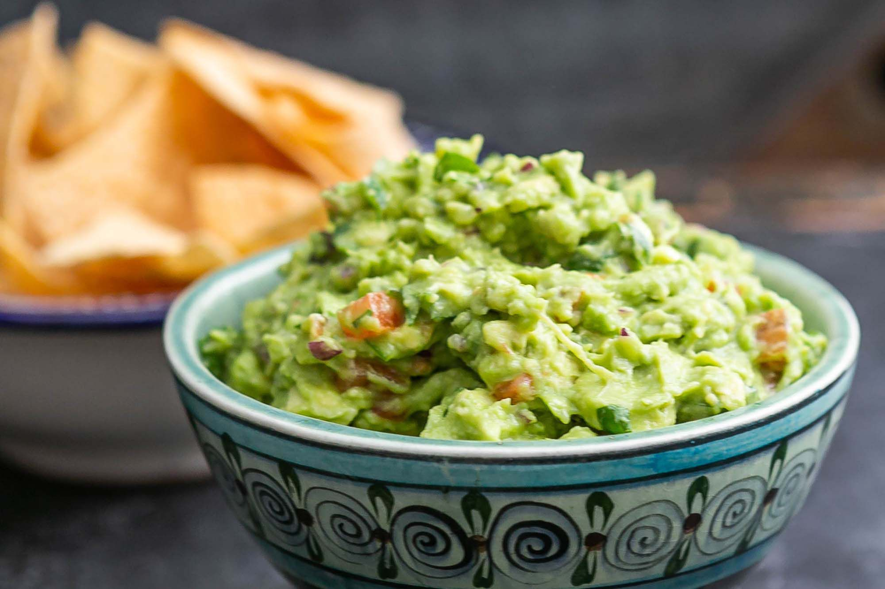

Guacamole

The Dip of Dreams
Ingredients
- 2 avocados, peeled and pitted
- 1 cup tomatoes, chopped
- 1/4 cup onion, chopped
- 1/4 cup cilantro, chopped
- 2 tbsp lemon juice
- 1 jalepeno, chopped and seeded
- salt and pepper to taste
Steps
- Mash avocados until creamy, with some chunks
- Add in tomatoes, onions, jalepenos, lemon juice, season with salt and pepper.
- Enjoy with your favorite chips!